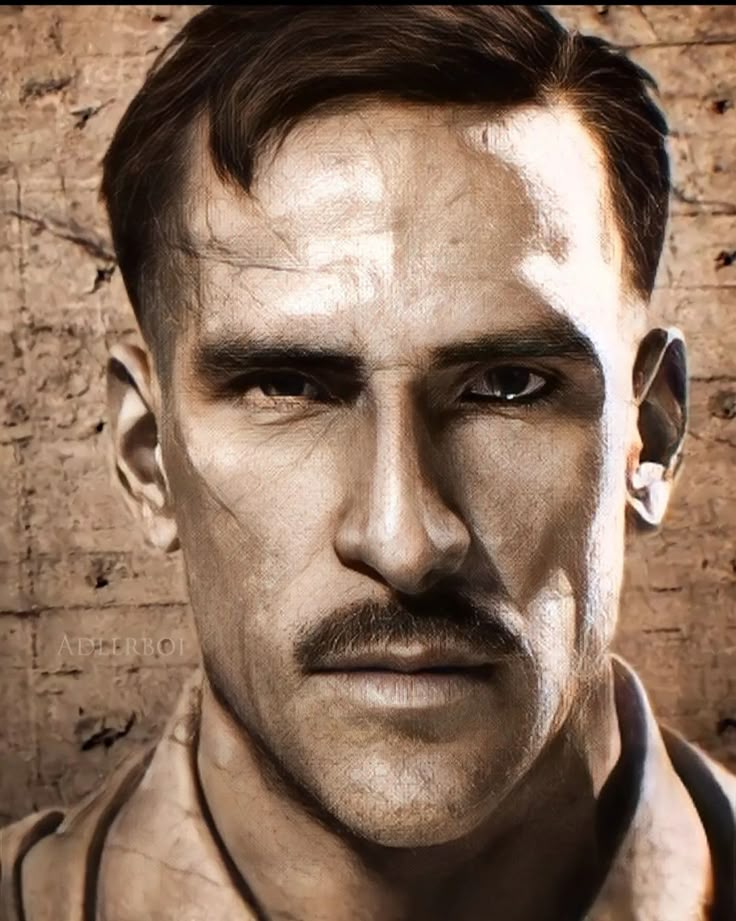
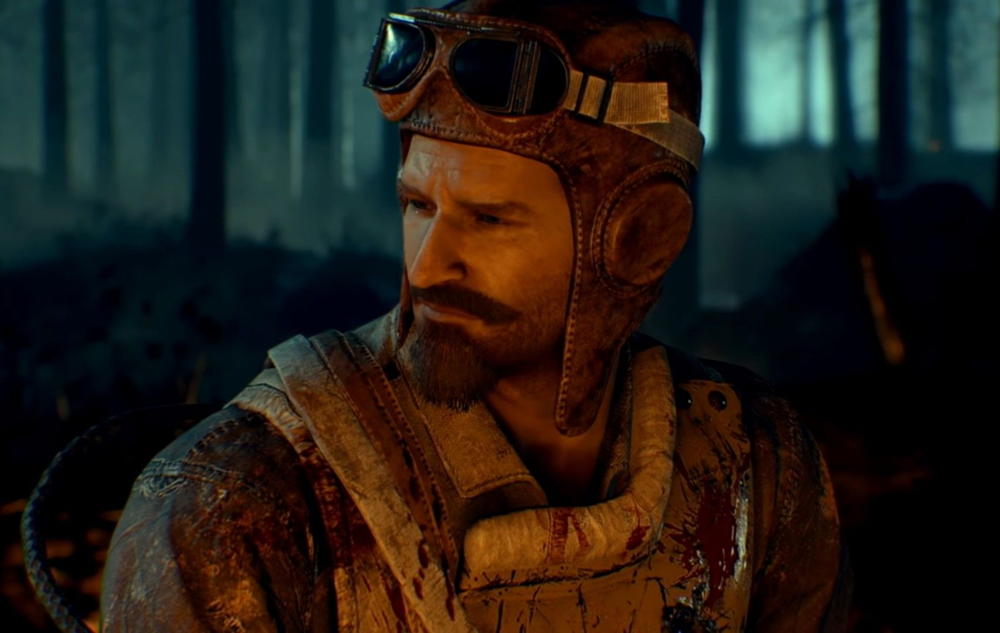
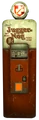
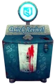
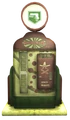
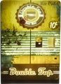
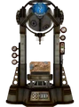

El mapa de Kino Der Totem nace con el Call of Duty Black Ops 1. Te encuentras en un cine antiguo de la segunda guerra mundial donde debes explorarlo y conectar la corriente para sobrevivir
Historia
Kino der Toten (en alemán “Cine de los muertos” o “Teatro de los muertos”) es uno de los mapas más icónicos del modo Zombies de Call of Duty: Black Ops. Está ambientado en un viejo cine abandonado en Alemania, que pertenecía a la organización secreta Group 935, responsable de investigar y crear zombis mediante el uso del elemento 115 y sus experimentos con armas y tecnología avanzada.
Cronológicamente, los sucesos de este mapa tienen lugar después de Der Riese. Debido a la sobrecarga de un teletransportador, el equipo Ultimis acaba en este misterioso teatro, donde deberán sobrevivir a oleadas de muertos vivientes. La dinámica del mapa se basa en avanzar por distintas salas del cine, activar la electricidad para desbloquear funciones clave y hacer uso de recursos como la Mystery Box, las máquinas de perks y el Pack-a-Punch para mejorar las armas, mientras se enfrentan a hordas cada vez más numerosas y desafiantes.

Científico loco de Group 935.Tiene un rol misterioso, obsesionado con los experimentos con el elemento 115, los teletransportadores, etc
Tank Dempsey
Soldado estadounidense. Personaje violento, buen peleador frente a hordas.
Nikolai Belinski

A menudo está bebido o con moraleja dudosa, aporta humor oscuro
Takeo Masaki
Guerrero japonés con sentido del honor. Tradicional, algo honorable, con trasfondo cultural, suele estar más “filosófico"

Jugger-Nog

Quick ReviveSpeed Cola

Mule Kick

Double Tap Root Beer

Der Wunderfizz
Perks
Perks
Precio
JuggerNog
$2500
Quick Revive
$1500 ($500 en solitario)
Mule Kick
$4000
Double Tap Root Beer
$2000
Der Wunderfizz
$1500
Las perks son potenciadores que mejoran las habilidades de los jugadores. Se adquieren en máquinas expendedoras repartidas por el mapa a cambio de puntos.
Cada perk tiene un precio y un efecto específico que puede ser crucial para la supervivencia en las oleadas de zombis.
Jugger-Nog: aumenta tu salud.
Quick Revive: permite revivir rapidamente a compañeros caídos o revivir automaticamente en solitario.
Mule Kick: permite llevar una tercera arma principal.
Double Tap Root Beer: aumenta la cadencia de disparo.